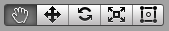

さて背景の設置とカメラの調整が済んだので、次はキャラクターなどのゲームオブジェクトを作成して画面に配置してみましょう。
Unity はプロトタイプベースの開発スタイルなので、まずベースとなる空のゲームオブジェクトを作成してから必要な機能をその都度組み込んでいくという手法で開発を進めて行きます。
キャラクターのゲームオブジェクトの作り方は前ページの背景画像の設置とほとんど同じ手順になります。
キャラクター画像を用意する。
Assets フォルダに画像を DnD すると画像が Asset として登録される。
登録した画像をさらに Assets フォルダ から Scene ビューに DnD するとその画像がオブジェクト化され、Hierarchy ウィンドウにオブジェクト名、Inspector ウィンドウにオブジェクトの情報が表示される。
(サイズを調整したい場合は) Inspector ウィンドウの Transform の Scale の x と y の値を変えるか、またはUnity エディタの左上にあるのうち右から 2 番目のボタンをクリックしてからマウスで調節する。
(位置を調整したい場合は) Inspector ウィンドウの Transform の Position の x と y の値を変えるか、またはUnity エディタの左上にあるのうち左から 2 番目のボタンをクリックしてからマウスでドラッグする。
Hierarchy ウィンドウでコピーしたいゲームオブジェクトを選択してから Ctrl + c → Ctrl + v で出来ます。
ただし位置が重なっていますので適宜変更して下さい。
Hierarchy ウィンドウで名前を変更したいゲームオブジェクトを選択してから右クリックメニュー → Rename で出来ます。
Hierarchy ウィンドウで削除したいゲームオブジェクトを選択してから Delete キーを押して下さい。